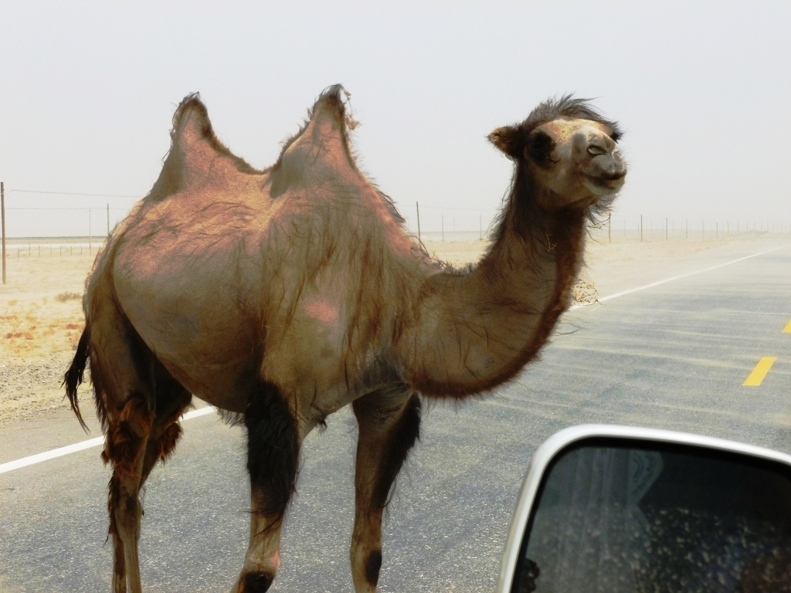

Camelids
The four Llamas and two camels are camelids. Camelids tend to be large and are strictly herbivorous.
Camelids differ from ruminants in several ways. They have a three-chambered rather than a four-chambered digestive
tract; an upper lip that is split in two with each part separately mobile; and an isolated
incisor in the upper jaw. They have long legs that, because they lack tensor skin to bridge
een thigh and body, look longer still. (from Wikipedia)
A table comparing Camels and Llamas
|  |
Camelid comparison |
| # of Humps |
Indigenous region |
Spits? |
Produces Wool? |
| Camels (bactrian) |
2 |
Africa/Asia |
Llama |
Llama |
| Llamas |
1 |
Africa/Asia |